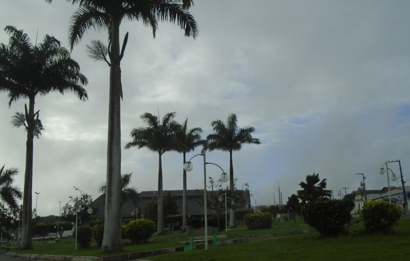

Pinhão
História
A partir do ano de 1700 a colonização e povoamento da Capitania de Sergipe expande-se pela zona sertaneja, a sua penetração nos fundos da faixa de terras compreendidas entre os rios Vasa Barris e Sergipe vai atingir em 1713 o território que veio a ser município de Pinhão.
No século XIX, precisamente em 1889, foram demarcadas terras pelo Engº Militar José Calazans, de imediato arroteadas com grande empenho pelo francês Cootchaux Ettinger e seu filho Gabriel. Aí teve início a cultura do algodão, atraindo pessoas das circunvisinhanças, e assim teve formação a povoação de Pinhão, nome este provindo da grande quantidade de uma planta nativa (pinhão e Purga), do nordeste, ali existente.
A povoação ganha sua capela sob o orago de São José. O Comércio, a agricultura e a pecuária crescem como fontes de vida da localidade.
Pela Lei Estadual nº 525-a, de 25 de novembro de 1953 foi o povoado elevado à categoria de cidade e sede do município, cujo território foi desmembrado do de Campo do Brito, somente instalado a 30 de janeiro de 1955. Pela Lei Estadual nº 554, de 6 de fevereiro do mesmo ano, é fixada a nova divisão Administrativa e Judiciária do Estado e o Município é composto de um único distrito de paz, Termo Judiciário da Comarca de Frei Paulo.
Em divisão territorial datada de 1-VII-1955, o município é constituído do distrito sede. Pela lei estadual nº 823, de 24-07-1957, é criado o distrito de Pedra Mole expovoado e anexado ao município de Pinhão. Em divisão territorial datada de 1-VII-1960, o município é constituído de 2 distritos: Pinhão e Pedra Mole. Pela lei estadual nº 1231, de 21-11-1963, desmembra do município de Pinhão o distrito de Pedra Mole. Elevado à categoria de município. Em divisão territorial datada de 31-XII-1963, o município é constituído do distrito sede. Assim permanecendo em divisão territorial datada de 2007.
fonte: https://cidades.ibge.gov.br/brasil/se/pinhao/historicoDados Gerais de acordo com o IBGE
| Prefeito (a) | Charles Wagner Nunes Oliveira |
| Vice-Prefeito (a) | José Augusto Santos da Cruz |
| Site do município | https://pinhao.se.gov.br/ |
| Área territorial | 156,373 km² |
| População estimada | 6.678 pessoas |
| Densidade demográfica | 38,32 hab/km² |
| IDHM | 0,583 |
| PIB per capita | R$ 11.681,08 |